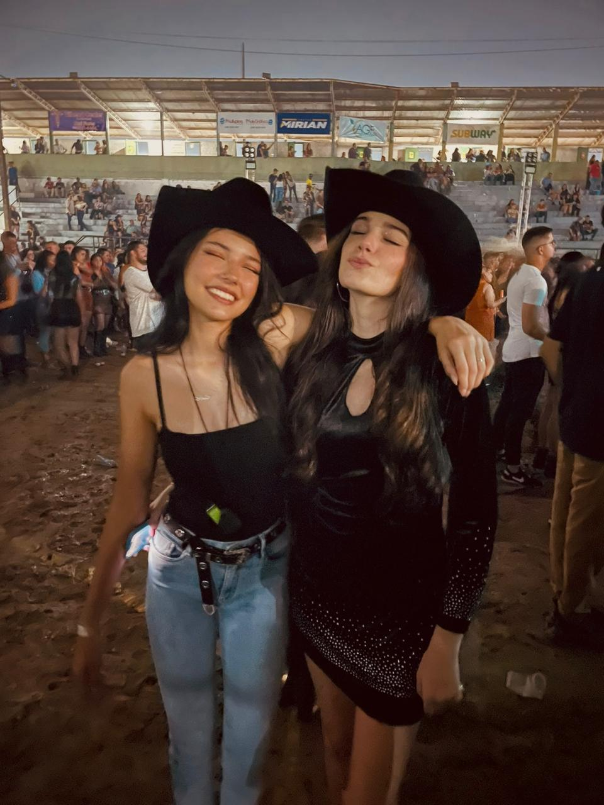

Quem Sou Eu
Meu nome é Camille Patricio Pagani Dias. Atualmente, curso o ensino médio integrado ao técnico em Informática no Instituto Federal de Rondônia (IFRO), Campus Vilhena. Ao longo da minha formação, tenho buscado não apenas excelência acadêmica, mas também crescimento pessoal e senso de responsabilidade social. Sou uma pessoa dedicada, resiliente e comprometida com meus objetivos. Meu maior sonho é ingressar em uma universidade federal para cursar Medicina, uma escolha motivada pelo desejo de cuidar do outro e contribuir de forma significativa para a sociedade. Acredito que, com esforço, disciplina e propósito, é possível superar desafios e transformar realidades.
Minha História
Nasci em Vilhena, mas vivi grande parte da minha vida em Chupinguaia, onde cresci cercada de amor, aprendizados e memórias especiais. Minha trajetória é marcada pelo carinho da minha família e por experiências que moldaram quem sou hoje.

Eu com os meus pais.
Morando em Chupinguaia
Esse período marcou profundamente minha vida, trazendo lembranças inesquecíveis e momentos que guardo com muito carinho no coração.
VIAGENS
Viagens que foram muito especial na minha vida, e tenho muitas memórias.
AMIZADES
As amizades são como refúgios seguros em meio às tempestades da vida. Ter amigos verdadeiros é ter com quem rir, desabafar e compartilhar momentos bons e ruins. Eles nos apoiam, nos motivam e tornam a caminhada mais leve e significativa.
